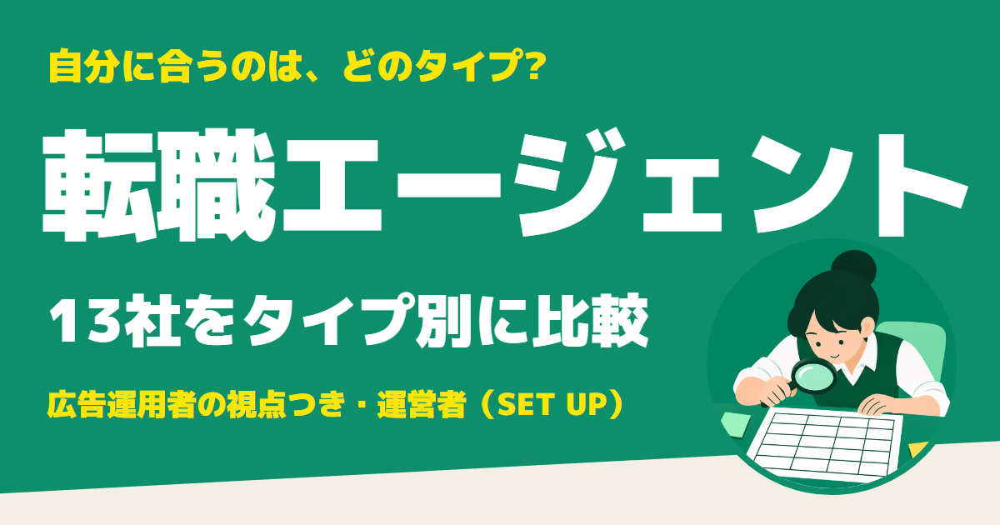
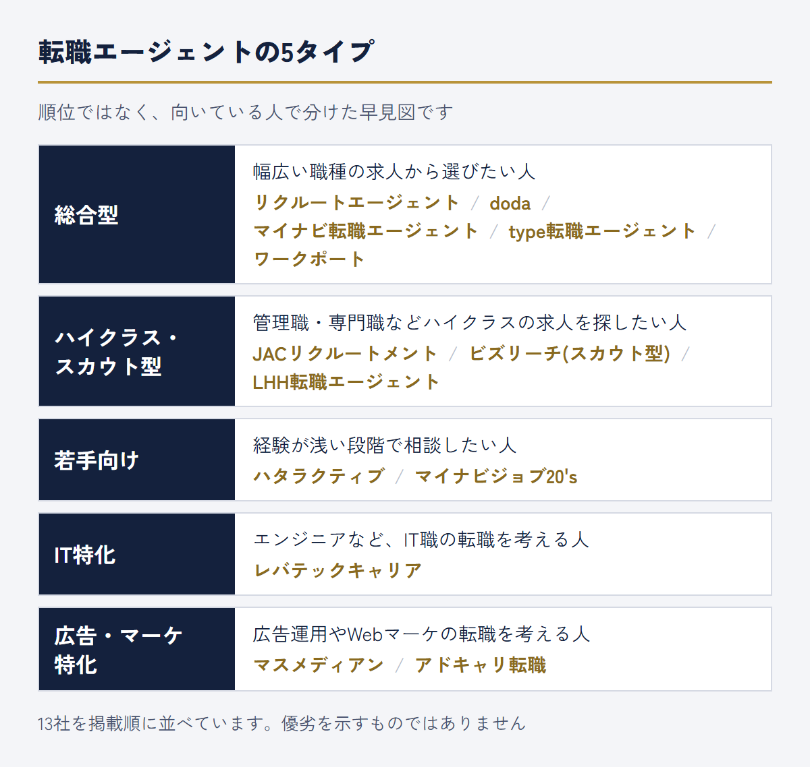
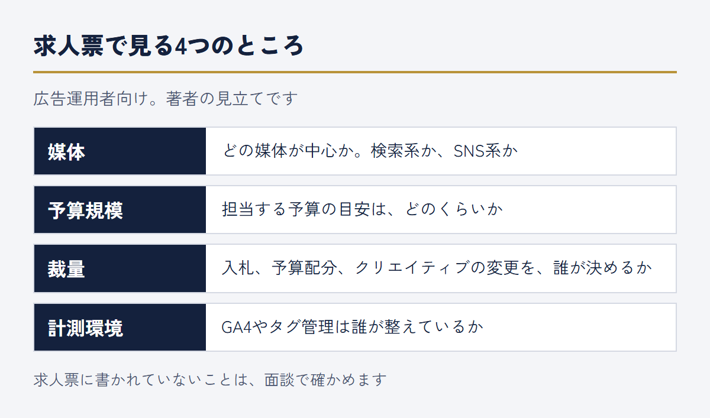
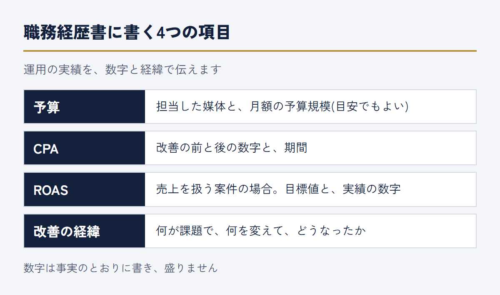
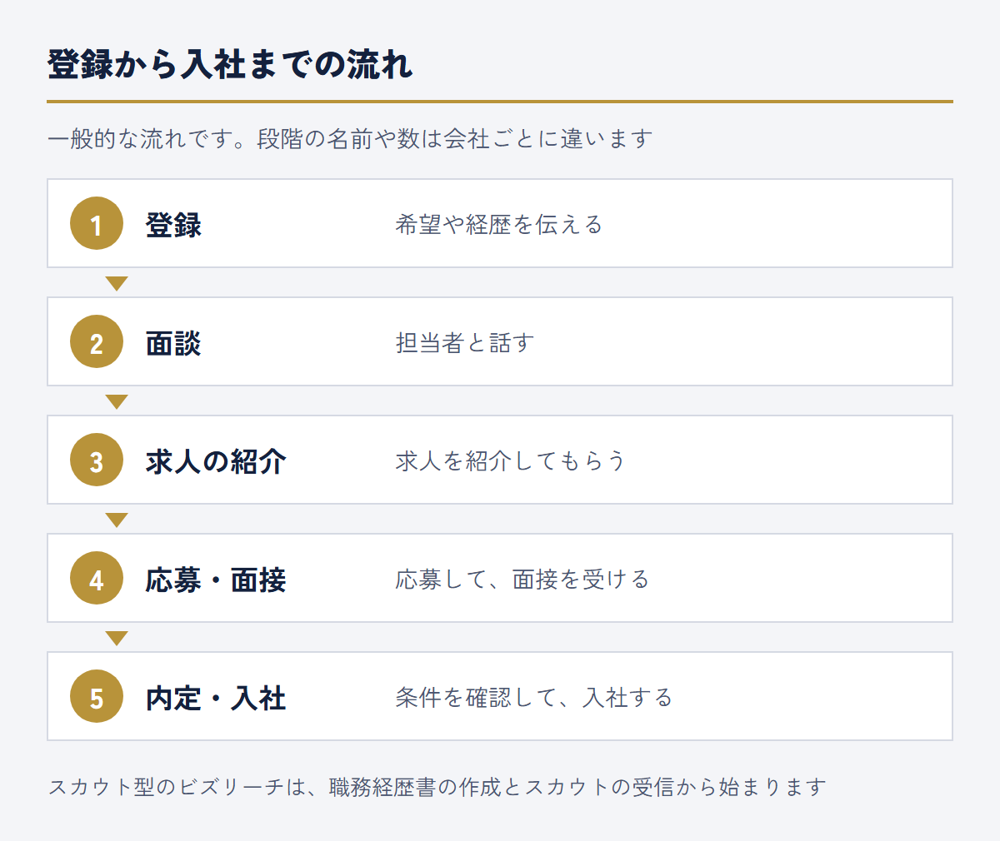

コラム ／ 転職
本記事にはアフィリエイト広告(A8.net)を利用したリンクが含まれます。リンク経由でお申し込みがあった場合、著者が報酬を受け取ることがあります。紹介するサービスの選定と評価は、著者の基準で行っています。
転職エージェントおすすめ13社をタイプ別に比較｜選び方と広告運用者の視点

転職エージェントのおすすめ13社を、総合型、ハイクラス・スカウト型、若手向け、IT特化、広告・マーケ特化のタイプ別に、順位を付けずに整理します。各社の公式情報は2026年11月26日に確認しました。広告運用者の視点での求人票の見方、職務経歴書の書き方、求人数の読み方、登録前の注意も書いています。ビズリーチはエージェントではなくスカウト型の転職サービスで、比較のために含めています。
「転職エージェント おすすめ」と検索すると、ランキング形式の記事がたくさん出てきます。ただ、順位は、書いた人が何を基準にするかで入れ替わります。転職は、人によって、いまの職種も、希望する働き方も、動ける時期も違うため、全員に共通する1位はありません。
この記事は、運用型広告の運用代行をしている著者が、各社の公式サイトで確認できた情報だけを使って、転職エージェント13社をタイプ別に整理したものです。順位は付けません。この記事は体験談ではありません。書くのは、公式に確認できた事実と、広告運用の現場にいる者として、求人や経歴書を見るときの判断基準です。
先に、この記事の数字の扱いを書いておきます。各社の公式サイトは、2026年11月26日に確認しました。求人数、実績、料金は、すべて公式サイトの表示を、時点つきで書きます。時点が公式に書かれていないものは「2026年11月26日閲覧時の公式サイトの表示」と書きます。書かれていないものは書きません。種類の違う数字(たとえば公開求人と、非公開を含む数)は、並べて比べません。また、「私ならこう判断する」という部分は、事実ではなく私の見立てだと分かるように書きます。
この記事は、紹介する各社が運営・監修するものではありません。リクルートエージェントの運営は株式会社インディードリクルートパートナーズで、この記事はリクルートグループが運営・監修するものではありません。
結論:まず、自分の「型」を決めてから、2〜3社に絞る
- 転職エージェントは、総合型、ハイクラス・スカウト型、若手向け、IT特化、広告・マーケ特化の5つのタイプに分けると選びやすい。この記事では13社を、この5タイプで紹介する
- 順位は付けない。同じ「求人数」「満足度」でも、数え方や調査の範囲が違うため、横に並べて優劣は決められない
- 広告運用者やWebマーケターが求人票で見るのは、媒体、予算規模、裁量、計測環境の4つ。社名や年収より先に、ここを確かめる
- 職務経歴書では、運用の実績を、予算、CPA、ROAS、改善の経緯で書く。数字だけでなく、何を考えて何を変えたかが伝わる形にする
- 求人数は、時点、公開と非公開、数え方で意味が変わる。多い少ないだけで選ばない
- 登録前に、個人情報の扱い、連絡の頻度、同意事項を、各社の公式ページで確かめる。登録は無料と案内されていても、ここは読んでおく
- 複数のエージェントに登録する方法はある。ただ、数を増やすほど管理が大変になるため、型の違う2〜3社が、一つの目安だと私は考える
次の3つの問いに答えると、どのタイプから見ればよいかの見当がつきます。私の目安です。
- いまの職種や業界を、続けたいか、変えたいか
- 求人を紹介してもらいたいか、企業からのスカウトを待ちたいか
- 転職の時期は決まっているか(決まっていないなら、情報収集から始められるサービスが向く)
「続けたい」なら、その職種に特化した型(IT特化、広告・マーケ特化)が候補になります。「変えたい」なら、幅広く求人を持つ総合型や、若手向けのサービスから見る方法があります。スカウトを待ちたい場合は、ハイクラス・スカウト型が候補です。
転職エージェントとは。使う前に知っておきたい基本
一般に、転職エージェントは、有料職業紹介の許可を受けた事業者が、求職者に求人を紹介し、応募や面接の調整を手伝うサービスです。この記事で紹介する各社の公式サイトでは、求職者は無料で使えると案内されています(料金の表記は第3節の表と各社の紹介で確認できます)。たとえば、JACリクルートメントは公式で「費用は企業から」と説明しています。
一般に、エージェントのサービスは、おおむね次のような流れで進みます。各社の公式の流れは、第13節で書きます。
- 登録して、希望や経歴を伝える
- 担当者と面談(オンライン、電話、来社など。方法は会社で違う)
- 求人の紹介を受ける
- 書類や面接の対策を受けて、応募する
- 内定が出たら、条件の確認をして、入社する
転職サイトとの違い
求人を自分で探して応募する「転職サイト」と、担当者がついて求人を紹介する「転職エージェント」は、使い方が違います。この記事で扱うのは後者ですが、ビズリーチのように、公式が、エージェントではなく転職プラットフォームと説明しているものも、比較のために載せています。使い方の違いは、第5節で書きます。
エージェントに任せられること、任せられないこと
エージェントは、求人の紹介、応募の調整、書類や面接の助言までを手伝います。一方で、「何をしたいか」「どんな条件なら譲れるか」は、自分で決める必要があります。ここが曖昧なまま登録すると、紹介される求人の幅が広がりすぎて、判断に時間がかかります。広告運用の仕事に例えるなら、目標(KPI)を決めずに配信を始めるのと同じで、何を成果とするかが決まっていないと、結果の良し悪しを判断できません。
13社の比較表(2026年11月26日に各社の公式サイトで確認)
先に、全体の比較表を示します。載せている数字は、すべて各社の公式サイトの表示です。時点は、各行に書いたとおりです。求人数は、数え方が会社ごとに違うため、行どうしを比べて優劣を決めないでください。詳しくは、第11節で書きます。

| サービス | 公式の対象・得意分野 | 求人数(時点) | 面談方法 | 運営会社 |
|---|---|---|---|---|
| リクルートエージェント 総合型 公式サイト | ―(特定の分野の記載なし) | 公開 約82万件、非公開 約24万件(2026/9/29時点。件数は採用予定数) | Zoomでのオンライン面談や電話面談が基本 | 株式会社インディードリクルートパートナーズ |
| doda エージェントサービス 総合型 公式サイト | ―(特定の分野の記載なし) | 時点の記載がある求人数を確認できなかったため、この記事では書きません | 原則としてオンラインまたは電話 | パーソルキャリア株式会社 |
| マイナビ転職エージェント 総合型 公式サイト | 業界・職種の専任アドバイザー制 | 公開 164,214件(2026年11月26日閲覧時の公式サイトの表示) | 来社・Web・電話など。夜間・土曜(10〜17時)も相談可 | 株式会社マイナビ |
| type転職エージェント 総合型(首都圏中心) 公式サイト | 一都三県、ITエンジニア・営業職・ハイキャリアの求人・転職に強い | 求人総数 38,289件、非公開 27,596件(2026/11/25時点) | 主に電話かオンライン。面談場所は東京・赤坂 | 株式会社キャリアデザインセンター |
| ワークポート 総合型 公式サイト | 全国47都道府県すべてに拠点展開 | 求人数15万件以上(2026年4月1日時点) | 47都道府県の拠点で対面相談(オンライン・電話は確認できず) | 株式会社ワークポート |
| JACリクルートメント ハイクラス 公式サイト | エグゼクティブ・専門職のハイクラス転職 | 約8万7,000件(非公開含む)。うち管理職 約1万7,500件、下限年収600万円以上 約4万4,000件(2026/9/17時点) | 来社・WEB・電話。紹介できる求人がある場合に面談 | 株式会社ジェイエイシーリクルートメント |
| ビズリーチ スカウト型・ハイクラス 公式サイト | 公式FAQでは「転職プラットフォーム」。求人紹介はしない | 総数の表示なし。年収1,000万円以上の求人が5割以上(2026年1月末時点) | スカウトを受けた企業・ヘッドハンターと | 株式会社ビズリーチ |
| LHH転職エージェント ハイクラス 公式サイト | ハイクラス層のキャリア支援に特化 | 公開 20,855件(2026年11月26日閲覧時の公式サイトの表示) | 方法は公式で確認できず。拠点は秋葉原、名古屋、大阪 | アデコグループ |
| ハタラクティブ 若手・未経験 公式サイト | フリーター・既卒・未経験の就職・再就職支援 | 表示なし | 現在はすべてのカウンセリングをオンライン方式 | レバレジーズ株式会社 |
| マイナビジョブ20's 若手 公式サイト | 20代・第二新卒・既卒向け転職エージェント(公式の表記) | 表示なし | 来社不要。WEB・電話でもカウンセリング実施中 | 株式会社マイナビ |
| レバテックキャリア IT特化 公式サイト | IT・Webエンジニアの転職に特化 | 53,000件以上(2026年1月時点、非公開含む) | 電話・オンライン、LINEも可。カウンセリングは1〜1.5時間 | レバテック株式会社 |
| マスメディアン 広告・マーケ特化 【マスメディアン】 | マーケティング・クリエイティブ職種に強み | 表示なし | 登録面談はWebまたは電話 | 株式会社マスメディアン(宣伝会議のグループ会社) |
| アドキャリ転職 広告・マーケ特化 公式サイト | 「WEB広告運用に特化した 20代・30代のための 転職サービス」(公式の表記) | 「非公開求人多数」の表示のみ | 基本的にZoomやGoogle Meet等を使ったオンライン面談 | HypeAgency株式会社(有料職業紹介 13-ユ-312944) |
料金について、各社の公式の表記は次のとおりです。リクルートエージェント、マイナビ転職エージェント、type転職エージェント、レバテックキャリア、LHH転職エージェントは「無料」、dodaとワークポートは「完全無料」、ハタラクティブ、マイナビジョブ20's、マスメディアンは「すべて無料」または「全て無料」、アドキャリ転職は「相談料・紹介料なし」、JACリクルートメントは「無料(費用は企業から)」です。ビズリーチは無料でも使えますが、一部の機能は有料会員向けで、自動更新です。金額は、申し込む前に公式で確認してください。
総合型:幅広い職種の求人から選びたい人向け
総合型は、特定の職種に絞らず、幅広い業界・職種の求人を持つタイプです。「いまの職種を続けるか、変えるかを、まだ決めていない」という段階で、選択肢を広く見たい人が、最初に見ることの多いタイプです。この記事では、リクルートエージェント、doda、マイナビ転職エージェント、type転職エージェント、ワークポートの5社を紹介します。
総合型の注意点は、サービスの性質上、求人の幅が広いぶん、「自分の職種の求人が、どのくらいあるか」が見えにくいことです。第10節で書く、広告運用者の求人票の見方を、総合型でも使えます。
リクルートエージェント(総合型)
運営は、株式会社インディードリクルートパートナーズです。
- 求人数:公開 約82万件、非公開 約24万件(2026年9月29日時点。件数は採用予定数)。公式の別の箇所に「非公開25万件」(2026年3月31日時点)の表示もあり、この記事では新しい時点の数字を使っています
- 実績:公式は「転職決定数No.1」と表示しています。根拠は、厚生労働省「人材サービス総合サイト」の、有料職業紹介事業者の就職者数(4か月以上の有期と無期、2025年度実績)で、2026年5月時点の表示です。この表示は、その条件の集計でのものです
- 面談:「Zoomでのオンライン面談や電話面談が基本」。東京本社のほか、北海道から福岡までの支社があります
- 登録の流れ(公式):会員登録、キャリア面談、求人紹介、書類・面接対策、内定・入社
向いていると考えられるのは、求人の選択肢を広く見たい人です。注意点:求人数が多いため、希望条件を決めておかないと、紹介される求人の幅が広がりやすいことです。面談で、優先する条件の順番を伝えると、絞り込みやすくなります。
出典:リクルートエージェント公式サイト(2026年11月26日確認)
doda エージェントサービス(総合型)
運営は、パーソルキャリア株式会社です。
- 求人数:時点の記載がある求人数を確認できなかったため、この記事では書きません
- 料金:完全無料。職業紹介優良事業者に認定されています(公式の表記)
- 面談:原則としてオンラインまたは電話。拠点は12か所。登録から面談まで、2週間程度かかることがあると公式が案内しています
- 登録の流れ(公式):登録、キャリアカウンセリング、求人紹介、書類作成・応募
注意点:公式が、登録から面談まで2週間程度かかることがあると案内している点です。転職の時期が決まっている場合は、登録の時期を早めに考えておくと、予定に合わせやすくなります。
出典:doda公式サイト(2026年11月26日確認)
マイナビ転職エージェント(総合型)
運営は、株式会社マイナビです。公式は、業界・職種ごとの専任アドバイザー制をとっていると案内しています。
- 求人数:公開 164,214件(2026年11月26日閲覧時の公式サイトの表示)。非公開の数は表示がありません
- 実績:定着率98.6%(2023年10月1日から2024年9月30日の入社者の、90日定着率)と、公式が表示しています
- 面談:来社、Web、電話など。夜間や土曜(10〜17時)の相談も可能です。拠点は、銀座、北海道、宮城、名古屋、大阪、岡山、福岡です
- 登録の流れ(公式):無料申込、面談、求人紹介、応募、面接、内定・入社
仕事をしながら動く人にとっては、夜間や土曜に相談できる点が、使いやすさにつながる可能性があります。注意点:定着率は、特定の期間の入社者を対象にした数字であることです。数字の条件を、読んだうえで判断してください。
出典:マイナビ転職エージェント公式サイトほか(2026年11月26日確認)
type転職エージェント(総合型・首都圏中心)
運営は、株式会社キャリアデザインセンターです。公式は「一都三県、ITエンジニア・営業職・ハイキャリアの求人・転職に強い」と案内しています。
- 求人数:求人総数 38,289件、非公開 27,596件(2026年11月25日時点)
- 実績:定着率97.4%(2023年4月1日から2024年3月31日の入社者が対象)。古い自社調べの数字は、この記事では使いません
- 面談:主に電話かオンライン。面談場所は東京・赤坂です
- 登録の流れ(公式):登録、電話面談、求人紹介、応募、選考
公式が首都圏中心と案内しているため、サービスの性質上、勤務地が首都圏以外の人は、紹介の範囲を事前に確かめる必要があります。
出典:type転職エージェント公式サイト(2026年11月26日確認)
ワークポート(総合型)
運営は、株式会社ワークポートです。公式は「全国47都道府県すべてに拠点展開」と案内しています。
- 求人数:求人数15万件以上(2026年4月1日時点)
- 料金:完全無料
- 面談:47都道府県の拠点での対面相談が確認できました。オンラインや電話の対応は、確認した公式ページでは分かりませんでした
- 登録の流れ(公式):申込、カウンセリング、求人紹介、応募・面接、内定
注意点:オンラインや電話の対応が公式ページで確認できなかったことです。遠方の人や、平日の拠点訪問が難しい人は、申し込む前に、面談の方法を公式で確かめてください。
出典:ワークポート公式サイト(2026年11月26日確認)
ハイクラス・スカウト型:管理職・専門職などハイクラスの求人を探したい人向け
ハイクラス向けのサービスは、経験や専門性がある人を対象にしたものです。この記事では、JACリクルートメント、ビズリーチ、LHH転職エージェントの3社を紹介します。3社は同じ「ハイクラス」に分類されますが、使い方が違います。JACリクルートメントとLHH転職エージェントは、担当者がつく「エージェント型」で、ビズリーチは、公式が「転職プラットフォーム」と説明する「スカウト型」です。
エージェント型とスカウト型の違い
エージェント型は、面談で希望を伝えると、担当者が求人を紹介します。スカウト型は、職務経歴書を登録しておくと、企業やヘッドハンターから連絡が届きます。ビズリーチの公式FAQは、求人の紹介はしないと説明しています。
広告の運用に例えるなら、エージェント型は「こちらから狙って配信する」、スカウト型は「経歴を見せておいて、反応を待つ」形です。スカウト型は、経歴の書き方が、受け取るスカウトの内容に直結します。第12節の職務経歴書の書き方が、特に重要になります。
JACリクルートメント(ハイクラス)
運営は、株式会社ジェイエイシーリクルートメントです。公式は「エグゼクティブ・専門職のハイクラス転職」を対象にしています。
- 求人数:約8万7,000件(非公開を含む)。うち、管理職は約1万7,500件、下限年収600万円以上は約4万4,000件(2026年9月17日時点)
- 実績:転職決定者の想定年収の平均は858.9万円(公式の表示。2025年9月〜2026年8月の決定者)。No.1の表示は確認できませんでした
- 料金:無料(費用は企業から、と公式が説明)
- 面談:来社、WEB、電話。紹介できる求人がある場合に面談。国内13拠点、海外11か国
- 登録の流れ(公式):登録、面談・求人紹介、応募・面接、内定・入社、アフターフォロー
注意点:公式が「紹介できる求人がある場合に面談」としている点です。登録したすべての人が面談に進むとは限らないと読めるため、登録前に公式のFAQで、条件を確かめてください。
出典:JACリクルートメント公式サイト、よくある質問(2026年11月26日確認)
ビズリーチ(スカウト型・ハイクラス)
運営は、株式会社ビズリーチです。公式FAQは、エージェントではなく「転職プラットフォーム」と説明しています。
- 求人:総数の表示は確認できませんでした。年収1,000万円以上の求人が5割以上(2026年1月末時点)と、公式が表示しています
- 規模:導入企業は45,800社以上(累計)、ヘッドハンターは9,500人以上(2026年7月末時点)
- 料金:無料でも使えますが、一部の機能は有料会員向けです(自動更新。価格は公式で確認)。そのため、この記事では「完全無料」とは書きません
- 面談:スカウトを受けた企業やヘッドハンターと行う形です
- 登録の流れ(公式):職務経歴書の作成、スカウトの受信、面談・面接、内定・入社
注意点:有料の機能がある点と、求人を紹介してもらう形ではない点です。自動更新の条件は、申し込む前に、公式の「特定商取引法に基づく表示」のページで確認してください。
出典:ビズリーチ公式サイト、特定商取引法に基づく表示(2026年11月26日確認)
LHH転職エージェント(ハイクラス)
公式は「ハイクラス層のキャリア支援に特化」と案内しています。アデコグループのサービスです。
- 求人数:公開 20,855件(2026年11月26日閲覧時の公式サイトの表示)
- 料金:無料
- 面談:拠点は、秋葉原、名古屋、大阪です
- 登録の流れ(公式):キャリアの整理、求人紹介、書類・面接対策
出典:LHH転職エージェント公式サイトほか(2026年11月26日確認)
若手向け:経験が浅い段階で相談したい人向け
若手向けのサービスは、社会人としての経験が浅い人や、既卒、フリーターなどを対象にしたものです。この記事では、ハタラクティブとマイナビジョブ20'sの2社を紹介します。公式が示す対象の表記は、引用として載せています。この記事が、年齢で対象を限定するものではありません。
経験が浅い段階では、職務経歴書に書ける実績が少ないため、「何を考えて、どう動いたか」を整理するのが、相談の中心になります。担当者との面談で、これを整理していくことになると考えられます。ただし、具体的な支援の内容は、各社の公式で確認してください。
ハタラクティブ(若手・未経験)
運営は、レバレジーズ株式会社です。公式は「フリーター・既卒・未経験の就職・再就職支援」を対象にしています。
- 実績:「26万人以上サポート」(開始から2026年3月までのカウンセリング件数)と、公式が表示しています。内定率や定着率は、この記事では扱いません
- 求人数:確認した公式ページに、表示はありませんでした
- 料金:すべて無料
- 面談:現在は、すべてのカウンセリングをオンライン方式で行うと、公式が案内しています。対象エリアは限定で、北海道、宮城、関東7都県、愛知、岐阜、静岡、三重、大阪、兵庫、京都、広島、岡山、福岡です
- 登録の流れ(公式):登録・予約、相談、面接対策、面接
注意点:対象エリアが決まっていることです。対象外のエリアの人は、登録前に、公式で確かめてください。
出典:ハタラクティブ公式サイトほか(2026年11月26日確認)
マイナビジョブ20's(若手)
運営は、株式会社マイナビです。公式は「20代・第二新卒・既卒向け転職エージェント」と案内しています。
- 実績:定着率94.6%(2024年10月1日から2025年9月30日の入社者の、3か月定着率)。ほかの数字は、根拠を確認できなかったため、書きません
- 求人数:確認した公式ページに、表示はありませんでした
- 料金:全て無料
- 面談:「来社不要！WEB・電話でもカウンセリング実施中」と、公式が案内しています。拠点は、銀座、横浜、大阪、神戸、名古屋、福岡です
- 登録の流れ(公式):申込、個別カウンセリング、応募、選考・面接、内定・入社
注意点:公式が示す対象が決まっていることです。対象に当てはまるかは、登録前に、公式の案内で確かめてください。
出典:マイナビジョブ20's公式サイトほか(2026年11月26日確認)
IT特化:エンジニアなど、IT職の転職を考える人向け
IT特化のサービスは、IT・Web業界の職種を中心に扱うタイプです。この記事では、レバテックキャリアを紹介します。広告運用者やWebマーケターが、データ分析や計測の領域に近づきたい場合などには、IT職の求人も視野に入ることがあります。ただ、公式が示す得意分野は「エンジニア」であり、広告運用の求人が中心かどうかは、公式では確認できません。
レバテックキャリア(IT特化)
運営は、レバテック株式会社です。公式は「IT・Webエンジニアの転職に特化」と案内しています。
- 求人数:53,000件以上(2026年1月時点、非公開を含む)
- 料金:無料
- 面談:電話、オンライン、LINEでも可能。カウンセリングは1〜1.5時間です
- 登録の流れ(公式):相談、カウンセリング、求人紹介、応募・面接
注意点:対象が「エンジニア」である点です。広告運用やマーケティング職の求人を探している人は、第8節の広告・マーケ特化のサービスも、あわせて見てください。
出典:レバテックキャリア公式サイト(2026年11月26日確認)
広告・マーケ特化:広告運用やWebマーケの転職を考える人向け
広告運用やマーケティングの職種を考えている人が、まず確認したいのが、このタイプです。総合型でも、これらの職種の求人は扱われますが、特化型は、対象の職種を絞っている点が総合型と違います。ここでは、マスメディアンとアドキャリ転職の2社を紹介します。
マスメディアン(広告・マーケ特化)
運営は、株式会社マスメディアンで、宣伝会議のグループ会社です。公式は「マーケティング・クリエイティブ職種に強み」と案内しています。
- 求人数:確認した公式ページに、表示はありませんでした
- 料金:すべて無料
- 面談:登録面談は、Webまたは電話です。拠点は、東京、名古屋、大阪、福岡です
- 公式のFAQの記述:フルリモートの求人は「ほとんどありません」。未経験向けの求人は、営業職が中心です
- 登録の流れ(公式):申込、面談・相談、求人紹介、内定・条件交渉、入社(途中の段階は省略)
注意点:公式のFAQが、フルリモートの求人は少ないと案内していることです。勤務の場所や働き方を重視する場合は、登録前にFAQを読み、面談で確かめてください。また、未経験向けの求人が営業職中心という点は、マーケティング職の経験が浅い人が、希望の職種に就く場合の判断材料になります。
出典:マスメディアン公式サイト、よくある質問(2026年11月26日確認)
公式サイト:【マスメディアン】 (広告)
(広告)
広告（マスメディアンの広告素材）
アドキャリ転職(広告運用特化)
運営は、HypeAgency株式会社(有料職業紹介 13-ユ-312944)です。公式は「WEB広告運用に特化した 20代・30代のための 転職サービス」と案内しています(公式の対象の引用です)。
- 求人数:「非公開求人多数」という表示のみで、数字は確認できませんでした
- 料金:相談料・紹介料なし
- 面談:基本的に、ZoomやGoogle Meetなどを使ったオンライン面談です。所在地は東京・港区芝です
- 登録の流れ(公式):無料登録、キャリア面談、求人紹介、面接対策・選考、内定・入社
注意点:公式が示す対象が決まっていることと、求人数の数字が確認できないことです。実際の求人の中身は、面談で確かめてください。
出典:アドキャリ転職公式サイト、HypeAgency株式会社の会社概要(2026年11月26日確認)
転職エージェントの選び方:5つの軸
ここまで13社を、タイプ別に紹介しました。次は、自分に合う会社をどう選ぶかです。順位ではなく、自分の条件に照らして選ぶための、5つの軸を示します。これは公式の基準ではなく、私が考えた整理です。
軸1:何を重視するか(職種、年収、働き方、時期)
最初に、譲れない条件を、3つまでに絞ります。条件が多すぎると、どのエージェントに相談しても、紹介される求人が絞り込めません。広告の運用で、目的(KPI)が複数あると最適化の方向が定まらないのと同じ状況になります。職種を変えたくないなら特化型、変えてもよいなら総合型、というのが最初の分かれ目です。
軸2:面談の方法と、拠点・対象エリア
公式の面談方法は、会社で違います。たとえば、リクルートエージェントはオンライン・電話が基本、ワークポートは拠点での対面相談が確認でき、ハタラクティブは現在すべてオンラインです。さらに、ハタラクティブは対象エリアが決まっています。仕事の都合で平日の昼に動けない人は、夜間・土曜に相談できるマイナビ転職エージェントのような案内があるかも、見ておくとよいと思います。
軸3:求人数の数字は、時点と種類を見る
求人数は、選ぶ軸にしやすい数字ですが、読み方に注意が必要です。詳しくは、第11節で書きます。
軸4:実績・評価の表示は、集計の条件を見る
公式の「No.1」の表示は、集計の対象や期間で意味が変わります。この記事で引用するのは、次の1つだけです。
- リクルートエージェント:転職決定数No.1(厚生労働省「人材サービス総合サイト」の、有料職業紹介事業者の就職者数。4か月以上の有期と無期、2025年度実績。2026年5月時点)
この表示は、上の条件での就職者数の集計結果で、著者が評価した順位ではありません。ほかの会社の受賞や順位の表示は、この記事では扱いません。
軸5:運営会社と、情報の扱い
運営会社は、個人情報を預ける相手です。比較表の運営会社の列を見て、会社の概要やプライバシーポリシーを、登録前に読んでおくと安心です。
タイプ別の早見表
ここまでの内容を、早見表にまとめます。「向いていると考えられる人」は、公式が示す対象と、私の整理をもとにしたもので、該当するかどうかは、公式の案内で確かめてください。
| タイプ | この記事の掲載社 | 向いていると考えられる人(私の整理) |
|---|---|---|
| 総合型 | リクルートエージェント、doda、マイナビ転職エージェント、type転職エージェント、ワークポート | 職種や業界を広く見て、選択肢を比べたい人 |
| ハイクラス・スカウト型 | JACリクルートメント、ビズリーチ、LHH転職エージェント | 専門性や管理経験があり、条件の高い求人を見たい人。スカウトを待つ形を試したい人 |
| 若手向け | ハタラクティブ、マイナビジョブ20's | 経験が浅い段階で、公式が示す対象に当てはまり、相談から始めたい人 |
| IT特化 | レバテックキャリア | IT・Web業界の職種(エンジニアなど)を考えている人 |
| 広告・マーケ特化 | マスメディアン、アドキャリ転職 | 広告運用やマーケティング職を続けたい、または目指したい人 |
広告運用者・Webマーケターの目線:求人票で見る4つのところ
ここからは、広告運用の現場にいる著者の視点で、求人票をどう読むかを書きます。ここで書くことは、公式の基準ではなく、運用の仕事をしている私の見立てです。求人票は、同じ「広告運用」という職種名でも、仕事の中身がかなり違うことがあります。私は、次の4つを、求人票や面談で確かめたいと考えます。

| 見るところ | なぜ見るか | 求人票・面談で確かめる例 |
|---|---|---|
| 媒体 | Google広告、Meta広告、LINEヤフー広告など、媒体で、画面も運用の考え方も違う。自分の経験とのつながりが変わる | どの媒体が中心か。検索系か、SNS系か。新しい媒体を扱う機会はあるか |
| 予算規模 | 運用の難しさは、予算の大きさで変わる。小さい予算の最適化と、大きい予算の運用は、求められる判断が違う | 担当する予算の目安は、どのくらいか。1人で何件、何社を担当するか |
| 裁量 | 運用の判断を、自分で行えるかで、成長の仕方と責任の重さが変わる | 入札、予算配分、クリエイティブの変更を、誰が決めるか。承認の流れはどうなっているか |
| 計測環境 | 計測が整っていないと、成果の良し悪しを判断できない。改善の質に直結する | GA4やタグ管理は誰が整えているか。コンバージョンの設計に関われるか。広告管理画面の数字と、自社の数字の差を、どう扱っているか |
媒体:同じ「運用」でも、中身が違う
広告運用の求人には、検索広告の運用、SNS広告の運用、複数媒体を横断した運用など、いくつかの形があります。たとえば、検索広告中心の仕事に、SNS広告の経験が活きる場面もありますが、そのまま通用するとは限りません。求人票に媒体名がない場合は、面談で、担当者に確かめます。
予算規模:数字の大きさは、難しさの全部ではない
予算が大きいほど難しいとは、一概に言えません。小さい予算では、データが少ない中で判断する難しさがあり、大きい予算では、数字のぶれが事業に与える影響が大きいという難しさがあります。大切なのは、自分が経験してきた規模との差を知り、その差を埋められるかを考えることです。予算規模は、求人票に書かれないことも多いため、面談で、目安を聞いておきます。
裁量:運用の判断を、どこまで任せてもらえるか
運用の仕事は、日々、判断の連続です。その判断を、自分で行えるのか、上長や顧客の確認が毎回必要なのかで、仕事の性質が変わります。自分で決められるほど、成果への責任も重くなります。どちらが良いかは、人によって違うため、自分が望む形を先に決めておくと、面談で聞くことが整理できます。
計測環境:改善の質を決める土台
私は、計測が整っているかを、特に気にします。コンバージョンが正しく測れていなければ、運用の良し悪しが分からず、改善の議論が成り立たないからです。広告の管理画面の数字と、GA4の数字は、定義が異なるため、差が出ること自体は不思議ではありません。大事なのは、その差を、組織がどう扱っているかです。面談で、「管理画面とGA4の数字が合わないとき、どう判断しているか」を聞くと、計測への考え方が見えることがあります。
事業会社と、運用代行の会社で、見るところが変わる
広告運用の仕事は、自社の広告を運用する事業会社の担当者(インハウス)と、複数の顧客の広告を運用する運用代行の会社に、大きく分けて整理できます。私の整理では、前者は「1つの事業の数字を深く見る」、後者は「複数の事業の運用を横断して見る」という違いがあります。どちらが良いかは、人によって違います。求人票を読むときは、どちらの形かを、まず確かめるとよいと思います。
面談で聞きたいことのリスト(広告運用者向け)
求人票に書かれていないことは、面談で、担当者に聞きます。次の質問は、私が確かめたいと考える項目です。答えられるかどうかは、担当者や求人によって違います。答えが「分からない」「確認する」となった場合は、その求人の情報が、担当者の手元にどのくらいあるのかを知る材料にもなります。
- 担当する媒体は何か。今後、扱う媒体が増える見込みはあるか
- 担当する予算の目安と、1人が担当する案件の数はどのくらいか
- 運用の判断(入札、予算配分、クリエイティブの変更)は、誰が決めるか。報告や承認の頻度はどのくらいか
- 計測は、誰が設計し、整えているか。コンバージョンの設計に、運用担当が関われるか
- 目標の数字(CPAやROASなど)は、誰が、どう決めているか。目標を見直す場面はあるか
- レポートは誰に向けて、どのくらいの頻度で出すか。社内向けか、顧客向けか
- 入社後に、期待されている役割は何か。数字を改善する役か、運用体制を作る役か
- 勤務の場所と、リモートワークの条件(フルリモートか、出社が必要か)
ここで大切なのは、答えの良し悪しを、その場で決めすぎないことです。答えを持ち帰って、自分の優先順位(第9節の軸1)と照らし合わせて、判断します。
求人数の数字の見方:3つの注意
比較表にある求人数は、会社が公式に表示した数字です。ただ、この数字を、そのまま比べるのは、おすすめしません。理由を、3つ書きます。
注意1:時点が違う
求人数は、日々変わる数字です。たとえば、リクルートエージェントの公式は、非公開求人を「約24万件(2026年9月29日時点)」と表示している一方、別の箇所に「25万件(2026年3月31日時点)」という表示もあります。同じ会社でも、時点が違うと、数字が変わります。この記事では、新しい時点の数字を使いました。他の記事や公式を見るときは、数字の横にある時点を、必ず確かめてください。
注意2:公開と非公開の違い
公式の表示には、「公開求人」の数だけを書くもの、「非公開を含む」数を書くもの、両方を書くものがあります。マイナビ転職エージェントやLHH転職エージェントの数字は「公開」、JACリクルートメントやレバテックキャリアの数字は「非公開を含む」です。種類の違う数字を並べて、大きい小さいを言うことはできません。
注意3:数え方が違う
リクルートエージェントは、公式が「件数は採用予定数」と書いています。会社によって、「求人1件」を、募集の数で数えるのか、採用予定の人数で数えるのかが、違う可能性があります。公式がどう数えているかが書かれていない場合は、数字の意味が確定しません。dodaは、時点の記載がある求人数を確認できなかったため、この記事では書いていません。
私は、求人数の「多さ」より、自分の希望する職種・条件の求人が、実際に紹介されるかを、面談で確かめるほうが大切だと考えます。広告の運用で、表示回数の多さより、狙った人に届いたかを見るのと同じ考え方です。
職務経歴書に、広告運用の実績をどう書くか
広告運用者の職務経歴書で、いちばん大切なのは、運用の実績を、数字と経緯で伝えることだと、私は考えます。エージェントの担当者も、求人先の採用担当者も、広告運用の細かい業務に詳しいとは限らないためです。
書く項目:予算、CPA、ROAS、改善の経緯
運用の実績は、次の4つの項目で整理すると、伝わりやすくなります。

- 予算:担当した媒体と、月額の予算規模(目安でもよい)。「Google広告で月額○円」のように書く
- CPA(獲得単価):改善の前と後の数字と、期間。「CPAを○円から○円へ」のように書く
- ROAS(広告費用対効果):売上を扱う案件の場合。目標値と、実績の数字を書く
- 改善の経緯:何が課題で、何を変えて、どうなったか。数字だけでは分からない、判断の理由を書く
数字は、事実のとおりに書き、盛りません。守秘義務があるものは、そのままの数字を出せません。その場合は、「前期比でCPAを約○割改善」のように、割合や幅で書く方法があります。面談の担当者に、どこまで書いてよいかを相談するのも、一つの方法です。
書き方の例(数字は仮のものです)
課題:○○の指名外キーワードのCPAが、目標を超えていた。
施策:検索語句の見直しと、除外キーワードの追加、広告文の訴求の変更を実施。
結果:○か月で、CPAを○円から○円へ。コンバージョン数は、ほぼ維持。
学び:除外キーワードの追加が、CPAの改善に最も効いたと判断した。理由は、○○のため。
この例の「○」は、実際の数字を入れる場所を示した仮のものです。数字を盛らず、自分の案件の事実に置き換えて使ってください。
数字が出せないときの書き方
経験が浅い段階では、実績の数字が少ないことがあります。そのときは、数字の代わりに、「どんな課題に対して、何を考えて、何を変えたか」を書きます。若手向けのサービス(第6節)の面談では、この整理を、担当者に相談する方法があります。具体的な支援の内容は、各社の公式で確認してください。
スカウト型では、経歴の書き方がそのまま「見え方」になる
ビズリーチのようなスカウト型は、登録した職務経歴書を、企業やヘッドハンターが見ます。そのため、広告運用の経験を、上の4項目で書いておくと、受け取る連絡の内容が、自分の希望に近づく可能性があります。ただし、実際にどのような連絡が届くかは、公式の案内にはなく、私にも分かりません。
職務経歴書で避けたい書き方
- 数字を盛る:面接で、数字の根拠や、改善の経緯を聞かれます。事実と違う数字は、後で説明に詰まる原因になります
- 担当した範囲を広く書きすぎる:自分が判断した部分と、チームで行った部分を、分けて書きます。運用の経験は、誰が何を決めたかで、価値が変わります
- 専門用語だけで書く:「CVR改善」「入札戦略の最適化」といった言葉だけでは、伝わりにくい読み手もいます。何をして、どうなったかを、短い文で添えます
- 顧客名や、守秘のある数字を、そのまま出す:出してよい範囲は、案件や契約で違います。迷うときは、業種名や規模の表現にして、数字は割合や幅で書きます
登録から入社までの流れ
各社の公式が示す流れを、まとめます。会社ごとに、段階の名前や数は違います。

| サービス | 流れ(公式の表記) |
|---|---|
| リクルートエージェント | 会員登録、キャリア面談、求人紹介、書類・面接対策、内定・入社 |
| doda | 登録、キャリアカウンセリング、求人紹介、書類作成・応募 |
| マイナビ転職エージェント | 無料申込、面談、求人紹介、応募、面接、内定・入社 |
| JACリクルートメント | 登録、面談・求人紹介、応募・面接、内定・入社、アフターフォロー |
| ビズリーチ | 職務経歴書の作成、スカウトの受信、面談・面接、内定・入社 |
| type転職エージェント | 登録、電話面談、求人紹介、応募、選考 |
| ハタラクティブ | 登録・予約、相談、面接対策、面接 |
| ワークポート | 申込、カウンセリング、求人紹介、応募・面接、内定 |
| レバテックキャリア | 相談、カウンセリング、求人紹介、応募・面接 |
| LHH転職エージェント | キャリアの整理、求人紹介、書類・面接対策 |
| マイナビジョブ20's | 申込、個別カウンセリング、応募、選考・面接、内定・入社 |
| マスメディアン | 申込、面談・相談、求人紹介、内定・条件交渉、入社(途中の段階は省略) |
| アドキャリ転職 | 無料登録、キャリア面談、求人紹介、面接対策・選考、内定・入社 |
面談の前に、準備しておくこと
どの会社でも、最初の面談が、その後の紹介の質を左右すると、私は考えます。次の3つを、メモにしておくと、話が進みやすくなります。
- 転職で譲れない条件(3つまで)と、譲ってもよい条件
- これまでの仕事の内容と、第12節の4項目(予算、CPA、ROAS、改善の経緯)で整理した実績
- 転職したい時期と、いまの勤め先の状況(退職の予定時期など)
面談では、求人の紹介を受けるだけでなく、こちらからも質問することをおすすめします。第10節の「媒体、予算規模、裁量、計測環境」は、そのまま質問の項目に使えます。
内定が出たあとに確認すること
内定が出たら、入社を決める前に、条件を、書面で確認します。エージェントを通している場合は、担当者に、確認したい点を伝えて、調整を依頼できます。広告運用者の場合は、次の点を、改めて確かめます。
- 担当する媒体と、予算の規模、業務の範囲が、面談で聞いた内容と一致しているか
- 配属先、勤務の場所、リモートワークの条件
- 評価の仕組み(運用の成果を、どう評価するか)
- 入社の時期と、いまの勤め先との調整
これは一般的な確認事項で、各社の公式が示す手順ではありません。内定後の進め方は、会社やエージェントごとに違うため、担当者に確認してください。
登録前の注意:個人情報、連絡の頻度、同意事項
転職エージェントに登録すると、職務経歴や連絡先といった、個人の情報を預けることになります。無料のサービスでも、登録前に、次の3つを確かめておくと安心です。これは一般的な注意で、特定の会社の事柄を指すものではありません。
個人情報の扱い
- 登録フォームに入力する項目と、その利用目的(プライバシーポリシー)を読む
- 第三者(求人企業など)へ情報が提供されるときの条件を確かめる。同意の有無が、画面上で選べるかも見る
- 退会や、情報の削除を、どのように依頼するかを、公式の案内で確認する
- 必要以上の情報を入力しない。任意の項目は、必要かを考えてから入れる
連絡の頻度と、連絡手段
- 連絡の手段(電話、メール、LINEなど)と、連絡が来る時間帯を、登録時や面談で伝える
- 連絡の頻度の希望を、担当者に、遠慮なく伝える。仕事中の電話が困るなら、メールを希望する、などの調整ができるかを聞く
- 複数社に登録する場合は、連絡が増えることを見込んで、専用のメールアドレスを用意する方法もある
同意事項と、利用規約
- 登録時のチェックボックスの内容(メルマガ、求人の提供、第三者への提供など)を、読んでから同意する
- ビズリーチのように、一部の機能が有料のサービスは、有料会員の条件(自動更新の有無、価格、解約の方法)を、申し込む前に公式で確かめる
- 内定の承諾や、退職のタイミングについて、会社ごとのルールがあるかを、面談で聞く
複数のエージェントに登録するときの考え方
転職エージェントは、複数に登録できます。ここでは、複数登録の長所と注意点を、一般論で整理します。
複数登録の長所
- 紹介される求人の幅が広がる。会社によって、扱う求人が違う
- 担当者との相性を、比べられる
- 同じ求人でも、会社ごとの説明や助言の違いを、見比べられる
複数登録の注意点
- 連絡や面談の予定が増え、管理が大変になる。面談の時間は、公式でも、レバテックキャリアのカウンセリングが1〜1.5時間と案内されているように、短くはない
- 同じ求人に、複数のエージェント経由で応募してしまう、という混乱が起こりうる。応募した求人は、一覧にして管理する
- エージェントごとに、書類の様式や、求められる情報が違う。職務経歴書は、土台を1つ作って、会社ごとに調整すると手間が減る
私なら、こう組み合わせる
これは私の見立てです。私なら、総合型から1社、特化型(自分の職種に合うもの)から1社、必要ならハイクラス・スカウト型から1社、という組み合わせにします。総合型で幅を見て、特化型で職種の深さを見る、という役割分担です。数を増やしすぎず、2〜3社に絞って、面談の質を確保するほうが、管理の面でも続けやすいと考えます。
広告運用・Webマーケティング職を考えている人は、この組み合わせの特化型の枠に、マスメディアンやアドキャリ転職を、検討する方法があります。IT職に近い仕事も視野に入れるなら、レバテックキャリアも候補になります。
よくある質問
- 転職エージェントは、どれがおすすめですか。
- 全員に共通する1位はありません。この記事では、順位を付けず、5つのタイプに分けて紹介しました。自分の職種、希望、時期に合う型を、先に決めてください。
- 本当に無料で使えますか。
- この記事で紹介した13社のうち、エージェント型の各社は、公式で、求職者は無料と案内しています(JACリクルートメントは「費用は企業から」と説明)。ビズリーチは、無料でも使えますが、一部の機能は有料の会員向けです。申し込む前に、公式で最新の案内を確認してください。
- 登録すると、必ず転職しなければなりませんか。
- 登録しただけで転職を求められるかは、この記事では各社の公式で確認していません。会社や条件で違う可能性があるというのが私の見立てです。登録時の同意事項と利用規約を読み、不明な点は公式に問い合わせてください。
- 仕事をしながらでも使えますか。
- 公式は、マイナビ転職エージェントが夜間・土曜(10〜17時)も相談可と案内しています。ほかの会社の面談の時間帯は、この記事では確認していません。登録前に、公式や担当者に確認してください。
- 広告運用の経験が浅くても、相談できますか。
- 相談できるかは、会社が示す対象によります。若手向けのサービスは、公式が対象を示しています(第6節)。広告・マーケ特化のサービスでは、マスメディアンの公式FAQが、未経験向けの求人は営業職が中心と案内しています。具体的な状況は、面談で伝えて確認してください。
- 求人数が多いほど、良いエージェントですか。
- そうとは言い切れません。求人数は、時点、公開か非公開か、数え方で意味が変わります(第11節)。自分の希望に合う求人が、実際に紹介されるかが大切です。
- スカウト型と、エージェント型は、どう違いますか。
- エージェント型は、担当者が面談で希望を聞き、求人を紹介します。スカウト型は、登録した経歴をもとに、企業やヘッドハンターから連絡が来る形です。ビズリーチの公式FAQは、求人の紹介はしないと説明しています。
- 複数のエージェントに登録してもよいですか。
- 登録は、複数にできます。ただ、連絡や面談の管理が大変になります。私は、型の違う2〜3社に絞る方法を考えます(第15節)。
- この記事の情報は、いつ時点のものですか。
- 各社の公式サイトで、2026年11月26日に確認したものです。時点が別に書かれている数字は、その時点のものです。
まとめ
転職エージェントは、順位で選ぶより、自分の「型」を決めて、2〜3社に絞るほうが、続けやすいと私は考えます。この記事で紹介した13社は、総合型、ハイクラス・スカウト型、若手向け、IT特化、広告・マーケ特化の5つに分けています。
- 職種を続けたいか、変えたいかを決める(第1節)
- 面談の方法、対象エリア、料金、運営会社を、公式で確かめる(第9節、第14節)
- 広告運用者は、求人票で、媒体、予算規模、裁量、計測環境を見る(第10節)
- 求人数は、時点、公開と非公開、数え方を見て、数字だけで選ばない(第11節)
- 職務経歴書に、予算、CPA、ROAS、改善の経緯を書く(第12節)
- 型の違う2〜3社に登録して、面談で、自分から質問する(第13節、第15節)
各社の公式サイトで、最新の案内を確認したうえで、自分の条件に合うところから検討してください。
参考文献(各社の公式サイト)
いずれも2026年11月26日に確認しました。求人数、料金、面談の方法は変わるため、申し込む前に、最新の公式ページで確かめてください。
総合型
- リクルートエージェント:公式サイト、サービスの案内、面談の案内、拠点
- doda エージェントサービス:エージェントサービス、doda トップ
- マイナビ転職エージェント:公式サイト
- type転職エージェント:公式サイト
- ワークポート:公式サイト、サービスの案内
ハイクラス・スカウト型
- JACリクルートメント:公式サイト、よくある質問
- ビズリーチ:公式サイト、特定商取引法に基づく表示
- LHH転職エージェント:公式サイト
若手向け
IT特化
- レバテックキャリア:公式サイト
広告・マーケ特化
- マスメディアン:公式サイト、よくある質問
- アドキャリ転職:公式サイト、HypeAgency株式会社 会社概要